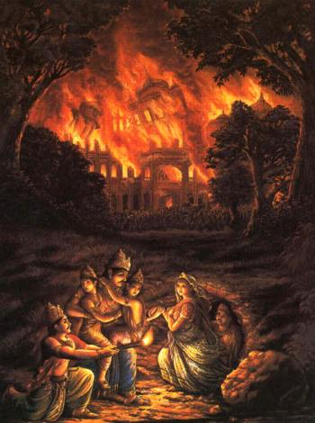
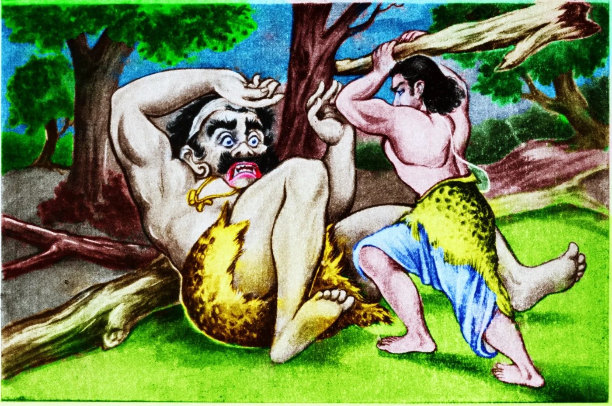

The Pandavas were superior to the Kauravas in every respect, both in strength and intelligence. They were greatly appreciated for their innate noble qualities. Bheeshma advised Dhritarashtra to declare Yudishthira as the crown prince of Hastinapur since he was the eldest and was endowed with fine qualities of a king. Duryodhan's jealousy for the Pandavas increased after hearing that Yudishthira would be declared the crown prince. Out of anger, Duryodhan planned to kill the Pandavas so that he can ascend the throne of Hastinapur. One day Duryodhan approached his father, Dhritarashtra, and requested him to send the Pandavas to the annual Pashupati fair in Varnavat, a place far away from Hastinapur. Ignorant of any foul play, Dhritarashtra asked the Pandavas to attend the fair. Duryodhan, on the other hand, secretly ordered his trusted partner Purochana, to make a special palace, with highly inflammable materials, for the Pandavas. His heinous plan was to burn the Pandavas alive while sleeping. According to the plan, Purochana would guard the palace and would put it on fire on the following dark night. However, Vidur, uncle of the Pandavas, and their well wisher, came to know of Duryodhan’s heinous plan and alerted Yudishthira. Yudishthira did not want to make a big deal out of this matter, since the Pandavas were not yet ready to fight back. So he decided to handle this in a clandestine manner. In order to allow the Pandavas to gain time, Vidur sent a miner to Varnavat to secretly dig an escape tunnel from the palace. The tunnel would lead into a nearby dense forest, an area easy enough for the Pandavas to hide.

On the night when the heinous deed was about to be performed, Bheema bolted Purochana’s room from outside and set the house on fire. Then the Pandavas escaped through the tunnel into the forest. At the site of the massive conflagration, the people of Varnavat came rushing to extinguish the fire. However, the highly flammable palace burnt to ashes quickly. Everyone thought that the Pandavas were burnt in the fire. Soon, the news reached Hastinapur. Dhritarashtra and Bheeshma were shocked to hear the news. Duryodhan was elated to hear it, but outwardly acted to be sad . After many miles of walk through the forest, the Pandava brothers and mother Kunti laid down under a banyan tree, hungry and thirsty. Bheema went to get the water but when he came back, he saw everyone in deep sleep. Bheema stayed awake to guard them. The forest was a hunting reserve of a fearful demon called Hidimb. He lived with his sister Hidimba on a huge tree, near the place where the Pandavas were resting. As soon as Hidimb smelled the presence of humans, he asked his sister Hidimba to kill them for their dinner. Hidimba reached the place and saw Bheema guarding the Pandavas. After seeing the muscular body of Bheema, she instantaneously fell in love with him. So she transformed herself into a beautiful maiden and approached Bheema. Bheema also fell in love with Hidimba at the first sight. On Hidimba's inquiry Bheema explained the reason for his family to hide in the forest. Hidimba sympathized and promised to help them. In the meantime, Hidimb got impatient and came down from the tree in search of his sister. When he saw his sister making love to his intended prey, he became furious. He attacked Bheema instantly. Bheema pulled him away to a distance so that his family could rest. A terrible fight ensued. Finally Hidimb was killed by Bheema. When the family of Pandavas got up, Kunti noticed a beautiful maiden standing near Bheema. She inquired and Hidimba explained what had just happened. She further requested Kunti to permit her son Bheema to marry her. Hidimba promised to return Bheema to the Pandavas after the birth of a child. Kunti and her four sons were impressed by Hidimba and agreed to accept her as Bheema’s wife. Following a short ceremony, Hidimba and Bheema left for the land of beauty. In course of time, a child was born who was named Ghatotkacha. Ghatotkacha grew up in no time and, like his father, became a great warrior. Bheema returned to his family with his son and wife. As promised, Hidimba left with her son after a short visit and Ghatotkacha promised to return to the Pandavas whenever called. After some time of hiding in the forest, the Pandavas began to plan to leave the forest when Veda Vyas arrived. He consoled the Pandavas and assured them that justice will finally avail. He advised them to have patience and to endure their current hardship. On the advise of Veda Vyas, Kunti and her five sons went to a nearby town, called Ekachakra. They stayed with a Brahmin family, disguised as Brahmins. The Pandavas lived on begging alms and chanting prayers. One day, while Kunti was resting at noon, she heard wailings inside the Brahmin's house where they were staying. Considering it to be a part of their duty to stand beside their host at the time of adversity, Kunti went to inquire of their misery. The Brahmin told the horror story that this village was cursed by a demon called Bakasur. When he came into the town of Ekachakra from no where, he was killing people at random and destroying the village. Finally the leader of the town made a deal with Bakasur asking him to stay in the nearby forest. Every day the town will send to him a cartload of food drawn by two buffaloes, driven by a person drawn by lot. Bakasur will eat the food, the buffaloes and the driver. Kunti immediately guessed that it must be the turn of the host-family that day to send a driver. To the surprise of all, Kunti offered her help.

"I have five children and I will send Bheema to meet the demon. He is strong enough to kill the demon and free the town from his clutch forever. The only request that I will make is to keep it a secret and not to reveal our identity." Bheema met Bakasur and ignoring him began to eat his food in front of him. Bakasur got furious and attacked Bheema. A fearful fight soon ensued and Bakasur was killed. Bheema secretly dragged his body at night to the entrance of the town and left it there for the people to witness. Next morning, the citizens were surprised to see the dead body of Bakasur. They rejoiced to their heart's content. When they asked the Brahmin, the host of the Pandavas, he only said, "It is all God's will. Let us thank Him for removing the menace for good."
Later on, while at Ekachakra, the Pandavas heard from a traveler that Drupad, the king of Panchal, was holding a swyambara for getting his beautiful daughter Draupadi married to the best of the princes. In those days, swyambara was a royal ceremony where the suitors competed in certain events and the winner got the hand of the princess. The Pandavas knew Drupad whom they humbled before their guru Dronacharya. Drupad did not have any child. He performed a Yagna (fire worship) so devotedly that a boy and a girl sprung out of the fire. The boy was named Dhritasthadyumna and the girl, Draupadi. Draupadi was well known for her stunning beauty and many princes aspired to win her hand. Pandava brothers also decided to attend the swyambara ceremony, disguised as Brahmins.